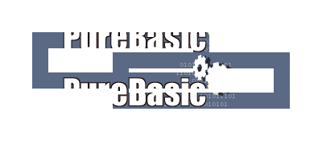

If OpenWindow(0, 0, 0, 400, 200, "VectorDrawing", #PB_Window_SystemMenu | #PB_Window_ScreenCentered)
CanvasGadget(0, 0, 0, 400, 200)
LoadImage(0, #PB_Compiler_Home + "examples/Sources/Data/PureBasicLogo.bmp")
If StartVectorDrawing(CanvasVectorOutput(0))
AddPathBox(50, 50, 200, 50)
AddPathBox(150, 75, 200, 50)
VectorSourceImage(ImageID(0), 255, ImageWidth(0), ImageHeight(0), #PB_VectorImage_Repeat)
StrokePath(20)
StopVectorDrawing()
EndIf
Repeat
Event = WaitWindowEvent()
Until Event = #PB_Event_CloseWindow
EndIf

If OpenWindow(0, 0, 0, 400, 200, "VectorDrawing", #PB_Window_SystemMenu | #PB_Window_ScreenCentered)
CanvasGadget(0, 0, 0, 400, 200)
LoadImage(0, #PB_Compiler_Home + "examples/Sources/Data/PureBasicLogo.bmp")
LoadFont(0, "Impact", 20, #PB_Font_Bold)
If StartVectorDrawing(CanvasVectorOutput(0))
FlipCoordinatesY(50, #PB_Coordinate_Source)
RotateCoordinates(50, 50, -45, #PB_Coordinate_Source)
VectorSourceImage(ImageID(0), 255, ImageWidth(0), ImageHeight(0), #PB_VectorImage_Repeat)
VectorFont(FontID(0), 150)
MovePathCursor(20, 20)
DrawVectorText("TEXT")
StopVectorDrawing()
EndIf
Repeat
Event = WaitWindowEvent()
Until Event = #PB_Event_CloseWindow
EndIf